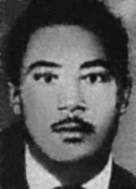

João
Alfredo
Dias
CIRCUNSTÂNCIAS DA MORTE
O golpe militar de abril de 1964 desencadeou um período de intensa repressão às lideranças das Ligas Camponesas. Pouco tempo depois, João Alfredo Dias foi preso, sendo mantido no 15o RI, onde também estava o camponês Pedro Inácio de Araújo, conhecido como Pedro Fazendeiro.
Poucos dias depois, dois corpos carbonizados, que seriam de João Alfredo Dias e Pedro Inácio de Araújo, foram encontrados em uma estrada. Em depoimento escrito oferecido à Comissão Especial de Mortos e Desaparecidos Políticos, Antônio Augusto de Arroxelas Macedo, vereador cassado de João Pessoa, confirmou ter estado preso com Pedro Inácio e João Alfredo no 15o RI.
“Em abril de 1964, quando fui preso no 15o RI em João Pessoa, fui levado para uma das três celas existentes e reservadas aos presos políticos ‘perigosos’, sendo as duas outras ocupadas respectivamente por PEDRO FAZENDEIRO e João Alfredo Dias, conhecido por Nego Fubá e também líder das Ligas Camponesas”.
Na audiência pública promovida em 15 de julho de 2013 pela CNV e entidades parceiras, o ex-deputado Francisco de Assis Lemos de Souza informou ter estado preso com Pedro Inácio de Araújo e João Alfredo Dias no 15o RI. Assis Lemos forneceu as mesmas informações em depoimento escrito encaminhado à Comissão Parlamentar de Inquérito da Assembleia Legislativa da Paraíba que, em 1981, apurava a morte de Pedro Fazendeiro e Nego Fubá.
O ex-deputado acrescenta que ele e os camponeses eram acusados do assassinato do fazendeiro Rubens Régis, sendo coagidos pelo major Cordeiro, responsável pelo Inquérito Policial Militar, a confessar sua responsabilidade ou denunciar os responsáveis pelo homicídio do latifundiário. Ao retornar de um interrogatório, Nego Fubá teria confidenciado a Assis Lemos acreditar que morreria na prisão, tendo em vista que o major Cordeiro instava para que ele confessasse um crime que não havia cometido.
Pouco depois dessa confidência, João Alfredo e, dias depois, Pedro Inácio, foram soltos. Ainda de acordo com o depoimento escrito prestado à Comissão Parlamentar de Inquérito, Assis Lemos dá detalhes sobre as datas de “libertação” dos camponeses. Assevera ainda “no dia 29 de agosto, João Alfredo foi ‘solto’, mas está desaparecido até hoje”. A libertação se deu “contrariando as normas dos quartéis, pois o fato se deu num sábado e à noite”. De igual modo, conta que “no dia 7 de setembro, por volta das 20 horas, Pedro Fazendeiro foi ‘solto’ e também está desaparecido”. Esse fato teve lugar “numa quarta-feira, dia 7 de setembro, após as solenidades que contaram com a presença do então comandante do IV Exército, general Olímpio Mourão Filho”.
Há certa imprecisão na data de liberação de João Alfredo Dias. Antônio Arroxelas registra em seu depoimento escrito à CEMDP que Nego Fubá foi solto no mesmo dia que Pedro Fazendeiro, ou seja, 7 de setembro. Um documento do IV Exército, produzido dias depois da data de libertação de Nego Fubá, informa que o camponês, depois de solto, estaria militando em sua terra natal.
Nos termos da RQI no 6/64, de 31 de agosto de 1964: “Segundo informes, JOÃO ALFREDO DIAS (Negro Fubá), após liberado do IPM, esteve em ação novamente em SAPÉ, reanimando os camponeses para a continuação da luta, pregando de casa em casa”. O documento informava também a relação de pessoas que já haviam sido presas por conta das investigações do citado IPM, entre eles Pedro Inácio de Araújo: “No Inquérito instaurado pelo Cmt do IV Exército, cujo Encarregado é o Major JOSÉ BENEDITO MONTENEGRO MAGALHÃES CORDEIRO, até a presente data foram presos para averiguações os seguintes indivíduos: LAURINDO DE ALBUQUERQUE MELO, ANTÔNIO AUGUSTO DE SOUZA, ANTÔNIO AUGUSTO ARROXELAS MACEDO, ANTÔNIO AURÉLIO TEIXEIRA, GILVAN CAMILO PEREIRA, JOSÉ DE OLIVEIRA RAMOS, DURVAL FRANCISCO DE ASSIS, MANOEL DE DEUS, PEDRO DANTAS DAS CHAGAS, JOÃO ALFREDO DIAS, JÓRIO DE LIRA MACHADO, HELOÍSIO GERÔNIMO LEITE, NIZI MARINHEIRO, PEDRO INÁCIO DE ARAÚJO, OLIVEIRO CAVALCANTI OLIVEIRA e ANTÔNIO FERNANDES ANDRADE”.
Em 10 de setembro de 1964, o jornal Correio da Paraíba denunciou a localização de dois corpos nas adjacências da estrada que liga Campina Grande a Caruaru, próximo ao distrito de Alcantil, município de Boqueirão. Os corpos estavam carbonizados e apresentavam sinais de tortura e enforcamento. Segundo a reportagem, não foi possível proceder à identificação dos cadáveres, em razão do estado dos restos mortais.
Na ocasião, ao tomar conhecimento dessa reportagem, conforme consigna no depoimento escrito prestado à CEMDP, Assis Lemos suspeitava “tratar-se de Pedro e João Alfredo devido à semelhança física, como também aos calções que as vítimas usavam, idênticos aos que vestiam na prisão”. No depoimento prestado à CNV, Assis Lemos afirma ainda que quem se encarregou de entregar João Alfredo e Pedro Fazendeiro a seus assassinos foram o major Cordeiro e o coronel Luiz de Barros da Polícia Militar do Estado da Paraíba (PMEPB), responsável pela repressão aos movimentos camponeses no município de Sapé.
A viúva de Pedro Fazendeiro também acreditava que o coronel estivesse por trás da morte dos camponeses. Em 1995, foram feitas tentativas no intuito de se identificar os dois corpos noticiados pelo jornal Correio da Paraíba. José Severino da Silva, conhecido como Zé Vaqueiro, foi quem encontrou os corpos, na ocasião dos fatos. Afirma que viu um dos corpos com uma corda amarrada ao pescoço, informando ainda que parecia que “aqueles homens foram muito judiados antes de morrer”.
Por solicitação do major da PM Antônio Farias, ajudou a enterrá-los no mesmo local onde foram encontrados carbonizados. Durante os procedimentos de identificação do local de sepultamento, Zé Vaqueiro foi consultado. As tentativas de localização dos corpos, no entanto, não obtiveram sucesso.
A CNV convocou José Benedito Montenegro de Magalhães Cordeiro para depor, no Rio de Janeiro, em 29 de julho de 2014. O oficial, porém, se recusou a comparecer. Ele prestaria esclarecimentos sobre os desaparecimentos de Nego Fubá e Pedro Fazendeiro. Até a presente data João Alfredo Dias permanece desaparecido.
The military coup of April 1964 triggered a period of intense repression against the leaders of the Peasant Leagues. Shortly afterwards, João Alfredo Dias was arrested and held in the 15th RI, where the peasant Pedro Inácio de Araújo, known as Pedro Fazendeiro, was also present.
A few days later, two charred bodies, said to be those of João Alfredo Dias and Pedro Inácio de Araújo, were found on a road. In a written statement offered to the Special Commission on Political Deaths and Disappearances, Antônio Augusto de Arroxelas Macedo, impeached councilor from João Pessoa, confirmed that he had been arrested with Pedro Inácio and João Alfredo in the 15th RI.
“In April 1964, when I was arrested in the 15th RI in João Pessoa, I was taken to one of the three existing cells reserved for ‘dangerous’ political prisoners, the other two being occupied respectively by PEDRO FAZENDEIRO and João Alfredo Dias, known as Nego Fubá and also leader of the Peasant Leagues”.
At the public hearing promoted on July 15, 2013 by the CNV and partner entities, former deputy Francisco de Assis Lemos de Souza reported having been arrested with Pedro Inácio de Araújo and João Alfredo Dias in the 15th RI. Assis Lemos provided the same information in a written statement sent to the Parliamentary Commission of Inquiry of the Legislative Assembly of Paraíba which, in 1981, investigated the deaths of Pedro Fazendeiro and Nego Fubá.
The former deputy adds that he and the peasants were accused of the murder of farmer Rubens Régis, being coerced by Major Cordeiro, responsible for the Military Police Inquiry, to confess their responsibility or denounce those responsible for the landowner's murder. Upon returning from an interrogation, Nego Fubá reportedly confided in Assis Lemos that he believed he would die in prison, given that Major Cordeiro urged him to confess to a crime he had not committed.
Shortly after this confidence, João Alfredo and, days later, Pedro Inácio, were released. Still according to the written statement given to the Parliamentary Commission of Inquiry, Assis Lemos gives details about the dates of the “liberation” of the peasants. He also asserts “on August 29th, João Alfredo was ‘released’, but he is still missing today”. The release took place “contrary to barracks rules, as the incident took place on a Saturday and at night”. Likewise, he says that “on September 7th, around 8 pm, Pedro Fazendeiro was ‘released’ and is also missing”. This event took place “on a Wednesday, September 7th, after the ceremonies which were attended by the then commander of the IV Army, General Olímpio Mourão Filho”.
There is some inaccuracy in João Alfredo Dias' release date. Antônio Arroxelas records in his written statement to CEMDP that Nego Fubá was released on the same day as Pedro Fazendeiro, that is, September 7th. A document from the IV Army, produced days after the date of Nego Fubá's release, states that the peasant, after his release, would be fighting in his homeland.
According to RQI no. 6/64, dated August 31, 1964: “According to reports, JOÃO ALFREDO DIAS (Negro Fubá), after being released from IPM, was in action again in SAPÉ, reviving the peasants to continue the fight, preaching from house to house”. The document also informed the list of people who had already been arrested as a result of investigations by the aforementioned IPM, including Pedro Inácio de Araújo: “In the Inquiry initiated by the Cmt of the IV Army, whose person in charge is Major JOSÉ BENEDITO MONTENEGRO MAGALHÃES CORDEIRO, to date the following individuals have been arrested for investigations: LAURINDO DE ALBUQUERQUE MELO, ANTÔNIO AUGUSTO DE SOUZA, ANTÔNIO AUGUSTO ARROXELAS MACEDO, ANTÔNIO AURÉLIO TEIXEIRA, GILVAN CAMILO PEREIRA, JOSÉ DE OLIVEIRA RAMOS, DURVAL FRANCISCO DE ASSIS, MANOEL DE DEUS, PEDRO DANTAS DAS CHAGAS, JOÃO ALFREDO DIAS, JÓRIO DE LIRA MACHADO, HELOÍSIO GERÔNIMO LEITE, NIZI MARINHEIRO, PEDRO INÁCIO DE ARAÚJO, OLIVEIRO CAVALCANTI OLIVEIRA and ANTÔNIO FERNANDES ANDRADE”.
On September 10, 1964, the newspaper Correio da Paraíba reported the location of two bodies near the road that connects Campina Grande to Caruaru, close to the district of Alcantil, municipality of Boqueirão. The bodies were charred and showed signs of torture and hanging. According to the report, it was not possible to identify the bodies, due to the condition of the remains.
At the time, upon learning of this report, as stated in the written statement given to CEMDP, Assis Lemos suspected “they were Pedro and João Alfredo due to their physical similarity, as well as the shorts that the victims wore, identical to those they wore in prison”. In the statement given to the CNV, Assis Lemos also states that those responsible for handing over João Alfredo and Pedro Fazendeiro to their killers were Major Cordeiro and Colonel Luiz de Barros of the Military Police of the State of Paraíba (PMEPB), responsible for the repression of peasant movements in the municipality of Sapé.
Pedro Fazendeiro's widow also believed that the colonel was behind the deaths of the peasants. In 1995, attempts were made to identify the two bodies reported by the newspaper Correio da Paraíba. José Severino da Silva, known as Zé Vaqueiro, was the one who found the bodies at the time of the events. He states that he saw one of the bodies with a rope tied around his neck, further stating that it appeared that “those men were severely harmed before they died”.
At the request of PM Major Antônio Farias, he helped bury them in the same place where they were found charred. During the procedures to identify the burial place, Zé Vaqueiro was consulted. Attempts to locate the bodies, however, were unsuccessful.
The CNV summoned José Benedito Montenegro de Magalhães Cordeiro to testify, in Rio de Janeiro, on July 29, 2014. The officer, however, refused to appear. He would provide clarification on the disappearances of Nego Fubá and Pedro Fazendeiro. To date, João Alfredo Dias remains missing.
El golpe militar de abril de 1964 desencadenó un período de intensa represión contra los líderes de las Ligas Campesinas. Poco después, João Alfredo Dias fue detenido y recluido en la 15ª RI, donde también se encontraba el campesino Pedro Inácio de Araújo, conocido como Pedro Fazendeiro.
Unos días más tarde, se encontraron en una carretera dos cadáveres carbonizados, al parecer los de João Alfredo Dias y Pedro Inácio de Araújo. En declaración escrita ofrecida a la Comisión Especial sobre Muertes y Desapariciones Políticas, Antônio Augusto de Arroxelas Macedo, concejal impugnado de João Pessoa, confirmó que había sido detenido junto con Pedro Inácio y João Alfredo en la 15ª RI.
“En abril de 1964, cuando fui detenido en la 15ª RI de João Pessoa, fui conducido a una de las tres celdas existentes reservadas para presos políticos “peligrosos”, siendo las otras dos ocupadas respectivamente por PEDRO FAZENDEIRO y João Alfredo Dias, conocido como Nego Fubá y también líder de las Ligas Campesinas”.
En la audiencia pública promovida el 15 de julio de 2013 por la CNV y entidades colaboradoras, el exdiputado Francisco de Assis Lemos de Souza denunció haber sido detenido junto con Pedro Inácio de Araújo y João Alfredo Dias en la 15ª RI. Assis Lemos proporcionó la misma información en una declaración escrita enviada a la Comisión Parlamentaria de Investigación de la Asamblea Legislativa de Paraíba que, en 1981, investigó las muertes de Pedro Fazendeiro y Nego Fubá.
El ex diputado añade que él y los campesinos fueron acusados del asesinato del campesino Rubens Régis, siendo coaccionados por el mayor Cordeiro, responsable de la Investigación de la Policía Militar, a confesar su responsabilidad o denunciar a los responsables del asesinato del terrateniente. Al regresar de un interrogatorio, Nego Fubá habría confiado a Assis Lemos que creía que moriría en prisión, dado que el mayor Cordeiro lo instó a confesar un delito que no había cometido.
Poco después de esta confidencia, João Alfredo y, días después, Pedro Inácio, fueron puestos en libertad. También según la declaración escrita entregada a la Comisión Parlamentaria de Investigación, Assis Lemos da detalles sobre las fechas de la “liberación” de los campesinos. También afirma que “el 29 de agosto João Alfredo fue ‘liberado’, pero hoy sigue desaparecido”. La liberación se produjo “contraviniendo las normas del cuartel, ya que el incidente tuvo lugar un sábado y por la noche”. Asimismo, dice que “el 7 de septiembre, alrededor de las 20 horas, Pedro Fazendeiro fue ‘liberado’ y también se encuentra desaparecido”. Este hecho tuvo lugar “un miércoles 7 de septiembre, después de las ceremonias a las que asistió el entonces comandante del IV Ejército, general Olímpio Mourão Filho”.
Hay cierta imprecisión en la fecha de lanzamiento de João Alfredo Dias. Antônio Arroxelas registra en su declaración escrita al CEMDP que Nego Fubá fue liberado el mismo día que Pedro Fazendeiro, es decir, el 7 de septiembre. Un documento del IV Ejército, elaborado días después de la fecha de la liberación de Nego Fubá, afirma que el campesino, luego de su liberación, estaría combatiendo en su tierra natal.
Según el RQI núm. 6/64, de 31 de agosto de 1964: “Según informes, JOÃO ALFREDO DIAS (Negro Fubá), luego de ser liberado del IPM, estuvo nuevamente en acción en SAPÉ, reanimando a los campesinos para continuar la lucha, predicando de casa en casa”. El documento también informó la lista de personas que ya habían sido detenidas como resultado de las investigaciones del citado IPM, entre ellas Pedro Inácio de Araújo: “En la Investigación iniciada por el Cmt del IV Ejército, cuyo responsable es el Mayor JOSÉ BENEDITO MONTENEGRO MAGALHÃES CORDEIRO, a la fecha han sido detenidas para investigaciones las siguientes personas: LAURINDO DE ALBUQUERQUE MELO, ANTÔNIO AUGUSTO DE SOUZA, ANTÔNIO AUGUSTO ARROXELAS MACEDO, ANTÔNIO AURÉLIO TEIXEIRA, GILVAN CAMILO PEREIRA, JOSÉ DE OLIVEIRA RAMOS, DURVAL FRANCISCO DE ASSIS, MANOEL DE DEUS, PEDRO DANTAS DAS CHAGAS, JOÃO ALFREDO DIAS, JÓRIO DE LIRA MACHADO, HELOÍSIO GERÔNIMO LEITE, NIZI MARINHEIRO, PEDRO INÁCIO DE ARAÚJO, OLIVEIRO CAVALCANTI OLIVEIRA y ANTÔNIO FERNANDES ANDRADE”.
El 10 de septiembre de 1964, el periódico Correio da Paraíba informó sobre la ubicación de dos cadáveres cerca de la carretera que une Campina Grande con Caruaru, cerca del distrito de Alcantil, municipio de Boqueirão. Los cuerpos estaban carbonizados y mostraban signos de tortura y ahorcamiento. Según el informe, no fue posible identificar los cadáveres, debido al estado de los restos.
En su momento, al conocer este informe, como consta en la declaración escrita entregada al CEMDP, Assis Lemos sospechó “que eran Pedro y João Alfredo por su parecido físico, así como por el pantalón corto que vestían las víctimas, idéntico al que vestían en prisión”. En la declaración dada a la CNV, Assis Lemos también afirma que los responsables de entregar a João Alfredo y Pedro Fazendeiro a sus asesinos fueron el mayor Cordeiro y el coronel Luiz de Barros de la Policía Militar del Estado de Paraíba (PMEPB), responsables de la represión de los movimientos campesinos en el municipio de Sapé.
La viuda de Pedro Fazendeiro también creía que el coronel estaba detrás de la muerte de los campesinos. En 1995 se intentó identificar los dos cadáveres, según informó el periódico Correio da Paraíba. José Severino da Silva, conocido como Zé Vaqueiro, fue quien encontró los cuerpos en el momento de los hechos. Afirma que vio uno de los cadáveres con una cuerda atada al cuello y afirma además que parecía que "esos hombres sufrieron graves daños antes de morir".
A pedido del primer ministro mayor Antônio Farias, ayudó a enterrarlos en el mismo lugar donde fueron encontrados carbonizados. Durante las diligencias para identificar el lugar de sepultura, se consultó a Zé Vaqueiro. Sin embargo, los intentos de localizar los cadáveres fueron infructuosos.
La CNV citó a declarar a José Benedito Montenegro de Magalhães Cordeiro, en Río de Janeiro, el 29 de julio de 2014. El funcionario, sin embargo, se negó a comparecer. Proporcionaría aclaraciones sobre las desapariciones de Nego Fubá y Pedro Fazendeiro. Hasta la fecha, João Alfredo Dias sigue desaparecido.